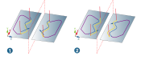
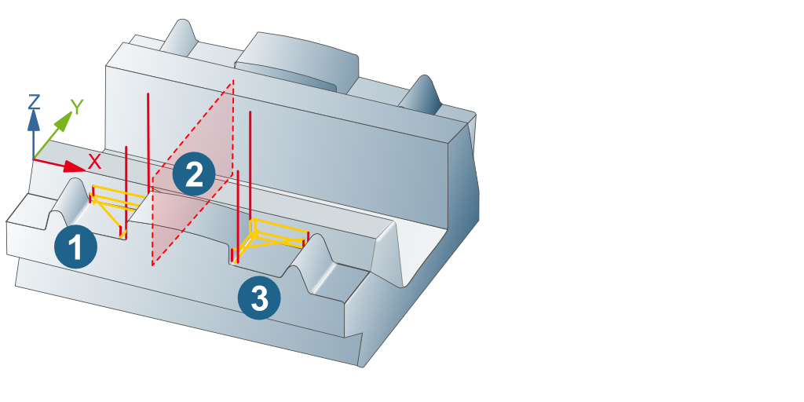
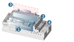

Mirror
This special type of transformation mirrors the base geometry. A prerequisite for this is the symmetry of the part used. HyperMILL calculates new toolpaths on the basis of the mirrored geometry.
Note
The → option in the job definition, Transformation dialog page is used to prevent the geometry from being mirrored.
Advantages: Improved performance, easy to use.
Limitations: Climb milling becomes Conventional milling and vice versa, no collision check is performed, not available for compound job or job list, but only for an individual job.
You can use a mirror in a job, compound job or job list.
Advantages
-
Full associativity between the base geometry and the mirrored element (job, compound job or job list)
-
No limitations for 2D, 3D and 5X machining
-
Flexibility as a result of partial deactivation of the direct link between the base element and the mirrored element
-
Retention of technology parameters (such as auto climb, automatic macros or optimized linking movements) in the mirror.
-
Patterns can be combined.
Warning
The mirroring of turning jobs is not possible due to a risk of collision. This also applies to the Turning drilling mode in drilling cycles.
Climb milling/Conventional milling
When mirroring curve machinings in the 2D Contour Milling, 3D Free Path Milling and 5X Contouring cycles, a distinction is drawn between whether machining takes place to the side of the contour (options: Left/ Right) or on the contour (option: On contour) .
(1) When machining takes place on the contour, the curve is mirrored, including the start point, to guarantee geometrically symmetric material removal.
(2) When machining takes place at the side of the contour, the direction of the contour in the mirroring is inverted to also guarantee equal climb to the contour in the mirrored machining.
|  |
Define
-
Navigate to the Transformation dialog, define a Transformation name and enter a Comment, if required.
-
When performing the mirror definition, use the Level, Three points or Line and Point options and select the geometric elements. If required, reverse the surface normal.
Apply
How to apply a mirror:
-
Enable the mirror in the job, compound job or job list (select the Enabled checkbox) and select the required mirror under Selection.
-
Enable the Copy option to create a mirror of the original (job, compound job or job list). In the hyperMILL browser, a mirrored copy of the original element is created and associatively linked with the original. All parameters are greyed out in the mirrored jobs and cannot be edited directly. As a result of the direct link (associativity) between the original job and the mirrored copy, all changes to the original job are also taken into account in the copy during the recalculation.
Tip
In mirrored machining jobs, you can remove the link between all parameters to the original job and adjust them individually! Right-click the respective location in the greyed-out dialog and select Unlink. The parameter can now be edited directly in the job copy. The associativity between both jobs is restored using the Link function.
Examples of use
3D Rest Machining, mirroring the part of a component. The mirror is defined in a job within a job list. (1) Original job, (2) Mirror plane, (3) Mirrored job.
|  |
Mirroring a component. The mirror is defined in the job list. (1) Component, (2) Mirrored component, (3) Mirror plane, (4) Fixtures.
|  |
Note
Job list comments are transferred to a new, mirrored job list when a mirror is created.
This also applies to defined materials. These cannot be changed in the mirrored job list.